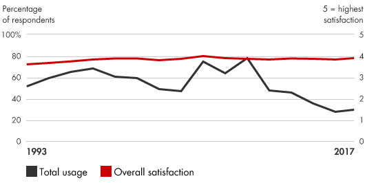
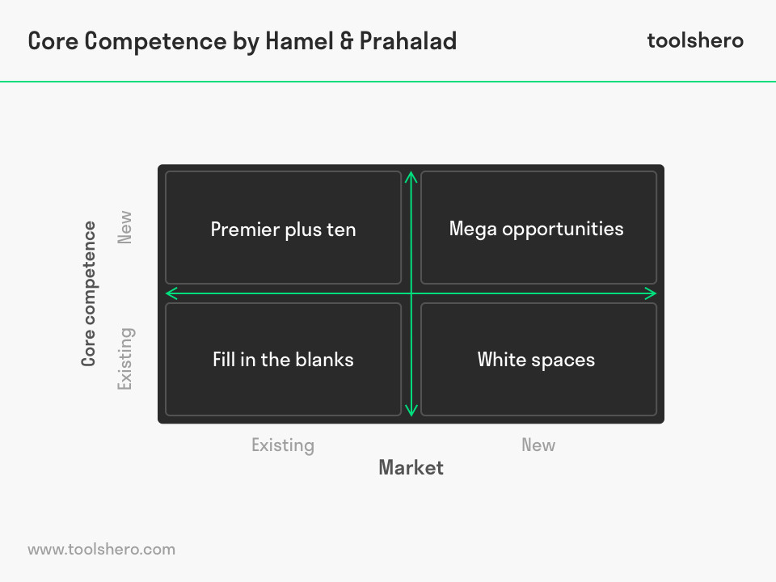

📘معرفی ابزار
شایستگیهای اصلی موضوعاتی هستند که به سختی کپی میشوند و کمک میکنند یک شرکت خود را از رقبا متمایز کند. به عبارت دیگر شایستگیهای اصلی به مجموعه مهارتهایی گفته میشود که شرکت را قادر میسازد تا ارزش منحصر به فرد را به مشتریان تحویل دهد. این موضوع شامل یادگیری جمعی یک سازمان، به خصوص نحوه هماهنگی مهارتهای تولید متنوع و یکپارچهسازی چندین فنآوری است؛ در نتیجه یک مزیت رقابتی پایدار برای شرکت ایجاد میکند و به آن کمک میکند تا در طیف گستردهای از بازارهای مرتبط حضور پیدا کند. قابلیتهای اصلی شرکت به میزان قابلتوجهی به مجموعه مزایایی که از طریق محصولات شرکت عرضه میشود کمک میکند. آزمونی که برای ارزیابی شایستگیهای اصلی در نظر گرفته میشود این است که معمولا کپی آنها توسط رقبا دشوار است. شناخت توانمندیهای اصلی به شرکتها این امکان را میدهد که در نقاط قوت خود بیشتر سرمایهگذاری کنند و راهکارهایی تهیه کنند که کل سازمان خود را متحد کنند.
🆕بهروزرسانی ۱۴۰۵
این بخش در نسخهٔ آنلاین ۱۴۰۵ افزوده شده است. متن اصلی کتاب (آبان ۱۳۹۹) در بخشهای بعد بدون تغییر آمده است.
آمار و شواهد تازه
- گزارش فناوری Bain در ۲۰۲۵ میگوید رهبران هوش مصنوعی برتری خود را گسترش میدهند؛ یعنی توانمندی مبتنی بر داده و هوش مصنوعی به یکی از مرزهای تمایز تبدیل شده است. (منبع: Bain)
چه چیزی تغییر کرده؟
پرسشهای سهگانهٔ شایستگی محوری (ارزش برای مشتری، تمایز از رقبا، قابلیت گسترش) اکنون باید با این پرسش تکمیل شود: کدام بخش شایستگی ما را میتوان با هوش مصنوعی تقویت کرد و کدام بخش را هوش مصنوعی کالایی میکند؟ شایستگیهای مبتنی بر دانش ضمنی و روابط کمتر قابل تقلیدند.
نمونه ابزارها و نرمافزارهای امروزی
نامها صرفاً نمونهاند و توصیه یا تبلیغ تجاری نیستند؛ شرایط دسترسی و تحریمها را برای سازمان خود بررسی کنید.
منابع این بخش
🧩فرآیند اجرا
- تواناییهای کلیدی خود را جدا کنید و آنها را به نقاط قوت سازمان تبدیل کنید.
- خود را با شرکتهای دیگر با همان مهارتها مقایسه کنید تا مطمئن شوید که تواناییهای منحصر به فرد شما در حال توسعه است.
- درکی از آنچه که مشتریان حقیقی آن ارزش دارند را ایجاد کرده و بر آن سرمایهگذاری کنید تا نقاط قوت خود را توسعه دهید و تقویت کنید.
- یک نقشه راه سازمانی تهیه کنید که اهداف ایجاد صلاحیت را تعیین کند
- بر روی ایجاد اتحادیه، شبکه همکاریهای تجاری، تصاحب و صدور مجوز که باعث ایجاد نقاط قوت سازمان در حوزههای اصلی خواهند شد، فعالیت کنید.
- گسترش ارتباطات و مشارکت در توسعه قابلیتهای اصلی را در سازمان تشویق کنید.
- نقاط قوت اصلی را حتی با گسترش مدیریت و تعریف مجدد مشاغل، حفظ كنید.
- قابلیتهای کم اهمیت را برونسپاری کنید تا منابعی که می تواند برای تعمیق قابلیتهای اصلی استفاده شود آزاد شوند.
💼موارد استفاده در کسبوکار
- ایجاد موقعیتهای رقابتی و راهبردی برای سرمایهگذاری بر روی نقاط قوت شرکت
- ادغام شرکت در واحدهای کسبوکار و واحدهای عملیاتی و بهبود انتقال دانش و مهارت بین آنها
- کمک به کارکنان برای درک اولویتهای مدیریت
- ادغام استفاده از تکنولوژی در انجام فرآیندهای کسبوکار
- تصمیم گیری در خصوص محل تخصیص منابع
- تصمیمات برون سپاری، واگذاری و مشارکت
- گسترش دامنه نوآوری شرکت و کسب آمادگی برای ارایه محصولات و خدمات جدید
- ایجاد بازارهای جدید و ورود سریع به بازارهای درحال ظهور
- بهبود تصویر و ایجاد وفاداری مشتری
📈میزان محبوبیت در طی زمان

🧪نمونه ابزار / الگو

در این الگو روشی برای ارزیابی شایستگیهای اصلی نشان داده شده است. با استفاده از این ماتریس میتوان شایستگیها را به تفکیک بازارهای موجود یا آتی شناسایی و بررسی کرد.
⬇️چکلیست قابلدانلود
چکلیست اجرایی این ابزار را دانلود و در سازمان خود تکمیل کنید. گامها از فرآیند اجرای همین صفحه برداشته شدهاند و ستونهای مسئول، موعد و وضعیت برای پیگیری تیمی خالی گذاشته شده است.
⬇ دانلود چکلیست (Word) · پروفایل شایستگیهای اصلی📚مراجع مطالعه بیشتر
- Bain & Company, Core Competencies, https://www.bain.com, 2018
- Ache, 2019 Competencies Assessment Tool, https://www.ache.org/-/media/ache/career-resource-center/competencies_booklet.pdf
- Alai, David, Diana Kramer, and Richard Montier. “Competency Models Develop Top Performance.” T + D, July 2006, pp. 47–50.
- Campbell, Andrew, and Kathleen Sommers-Luchs. Core Competency-Based Strategy. International Thompson Business Press, 1997.
- Critelli, Michael J. “Back Where We Belong.” Harvard Business Review, May 2005, pp. 47–54.
- Drejer, Anders. Strategic Management and Core Competencies: Theory and Applications. Quorum Books, 2002.
- Hamel, Gary, and C. K. Prahalad. Competing for the Future. Harvard Business School Press, 1994.